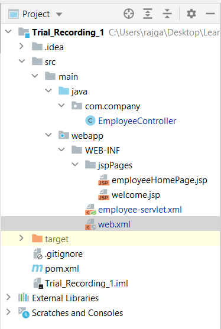
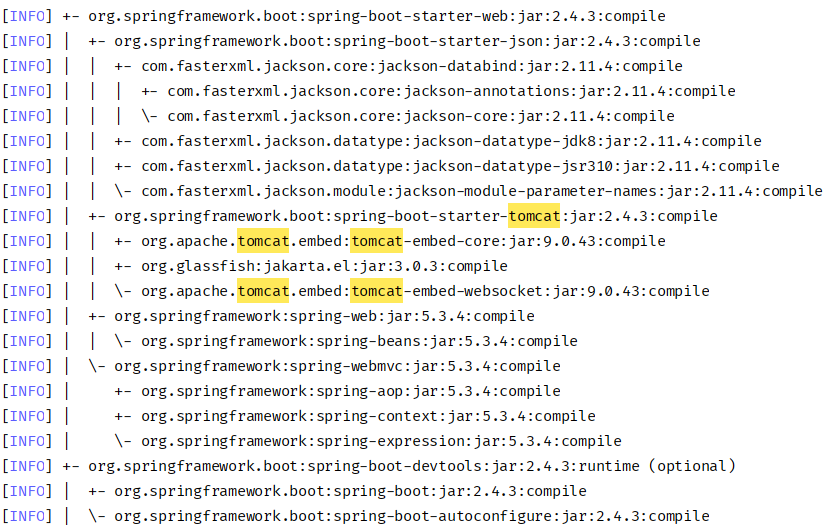
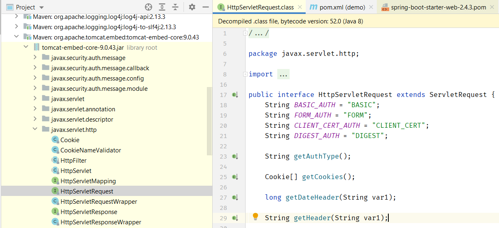
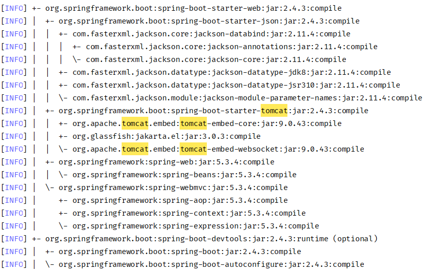
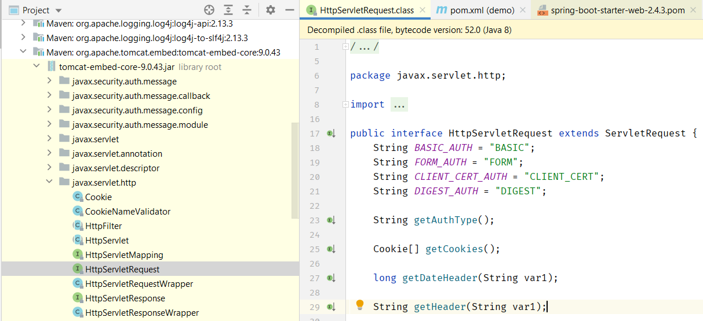

This page contains my notes from the following books:
a) Baeldung REST API Spring Course
b) Baeldung Spring Course
a) Baeldung REST API Spring Course
b) Baeldung Spring Course
Index:
REST API Spring Course:
Module 0.1: Annotations
Module 0.2: Questions
Module 1: The Basics of REST with Spring
Module 2: REST and HTTP Semantics
Spring Course:
Module 2: Dependency Injection and the Spring Context
Module 3: Project Configuration
Module 4: Deep Dive Into Spring Boot 2
Module 5: Persistence and Data Access
Module 1: The Basics of REST with Spring
Lesson 4: Properties and Project Settings
-Relevant code can be found here.
- How do you split up your properties file, so that the app reads different property files depending upon the environment that it is in (dev, local, prod). See here.
- What is the
- What is the
- How do you split up your properties file, so that the app reads different property files depending upon the environment that it is in (dev, local, prod). See here.
- What is the
InitializingBean? It can be used to read property values that are specified in
the classpath files in: src/main/resources - What is the
Environment and what is it used for? Read "Spring Configuration Tips" - Talk by
Josh Long here.Lesson 5: The Web Configuration
- Relevant code here.
- Consider a Client sending a HTTP request to the server. In the HTTP Headers of the request, the
- Using HATEOAS changes the content-type returned by the server from
- You can implement the
- You can enable
- You can enable
- Consider a Client sending a HTTP request to the server. In the HTTP Headers of the request, the
Content-Type
specifies the type of the content in the body of the HTTP request. The Accept headers specifies
the type of content that the Client accepts. The Accept header specified by the Client will be
used to choose the appropriate Http Converter to marshall the entity. Read about how HTTP Converters work here on Baeldung. - Using HATEOAS changes the content-type returned by the server from
application/json to application/hal-json.
- You can implement the
WebMvcConfigurer class to do the following: - You can enable
SerializationFeature.INDENT_OUTPUT to indent the RAW JSON returned from your
REST API.
- You can enable
DeserializationFeature.FAIL_ON_UNKNOWN_PROPERTIES to enable your API to not
accept any fields that are not present on the Peristence objects.
Module 2: REST and HTTP Semantics
Lesson 1: Exception Handling and Sane HTTP Status Codes
- Starting with Boot 2.3, we also need to explicitly add the spring-boot-starter-validation dependency (Source).
- If you use a constraint like
- A global exception handler is created by extending the
- Handling exceptions is explained with diagrams here.
- If you use a constraint like
@NotNull in your entity, then you need to also follow that up
with @Validated or @Valid when you are passing in that object to a POST request.
Only then will you get the 400 Bad Request error if the constraint is invalidated. Otherwise you will get a
500 Internal Server Error. Check this SO
Link. - A global exception handler is created by extending the
ResponseEntityExceptionHandler class.
Also, you don't need to extend ResponseEntityExceptionHandler if you don't need all the
exception mappings it provides (SO
Source) - Handling exceptions is explained with diagrams here.
Lesson 1: Exception Handling and Sane HTTP Status Codes pt2
-
-
- In order to mark a field as "Not Null" in the
a) Annotate it with
b) Annotate it with
Remember to add the
- Usage of
- Note how we are using
Throwables.getRootCause from the Guava library can be used to get at the root cause of the
Exception
-
findOne vs findById vs getOne here
on SO.
- In order to mark a field as "Not Null" in the
@Entity object, there are 2 ways that you can
accomplish this - a) Annotate it with
@NotNull b) Annotate it with
@Column(nullable = false) Remember to add the
@Valid in front of the object when you are reading it as an argument as
shown here in this
question. - Usage of
@ExceptionHandler to catch and throw exceptions was discussed. Very useful
discussion.- Note how we are using
@ExceptionHandler, with the class of the Exception types that we want
the
method to handle, being passed in as arguments to the annotation. We can do that because we have specified
the handleBadRequest method as having an argument of type RuntimeException, hence
both DataIntegrityViolationException and MyBadRequestException work as well. You
can refer the code here.
Lesson 2: The Basics of Input Validation
- Lecture Notes
- Code available here.
- JSR-303 and JSR-349 are the standards of the validation. Apart from these, Hibernate also provides some other validations that are not a part of the standard but are very helpful.
- In Spring Boot, starting from version 2.3, the validation artifact has been moved from the web starter into a separate one: search for
- Question: What should we do in the case of partial update? Which method should we use?
- Best practice for partial updates in a RESTful service
- Why isn't HTTP PUT allowed to do partial updates in a REST API?
- Is it OK to partially change a collection with PUT or DELETE?
- Code available here.
- JSR-303 and JSR-349 are the standards of the validation. Apart from these, Hibernate also provides some other validations that are not a part of the standard but are very helpful.
- In Spring Boot, starting from version 2.3, the validation artifact has been moved from the web starter into a separate one: search for
spring-boot-starter-validation on maven repo and add that to
your project. - Question: What should we do in the case of partial update? Which method should we use?
- Best practice for partial updates in a RESTful service
- Why isn't HTTP PUT allowed to do partial updates in a REST API?
- Is it OK to partially change a collection with PUT or DELETE?
Lesson 3: Good URI Practices
- Check this link
explaining best practices for REST
- Lecture notes here.
- Nouns vs Verbs. Always prefer nouns
- Plural vs Singular. Either works. But be consistent.
- IDs vs UUIDs. Eh.
- Lecture notes here.
- Nouns vs Verbs. Always prefer nouns
- Plural vs Singular. Either works. But be consistent.
- IDs vs UUIDs. Eh.
Lesson 4: Leverage HTTP Verbs and Semantics
- Lecture notes here.
- Relevant code here. This is how the request for the pagination is handled. - What is
- Relevant code here. This is how the request for the pagination is handled. - What is
@Transactional used for? This
link goes into the details. Lesson 5: Support both XML and JSON
- Lecture notes here.
- Earlier there was the Xtream library. But now we can use the
- All you have to do is specify the above 2 dependencies in your Gradel file, and boom. Now the return type becomes XML. (The Content-type header is
-
- Earlier there was the Xtream library. But now we can use the
jackson-dataformat-xml library
which is an extension of the existing Jackson JSON library. woodstox-core-asl is another
library that we need. Woodstox is a high-performance XML processor that implements Stax (JSR-173) and SAX2
APIs. Both SAX and StAX are stream / event oriented XML parsers. SAX uses a "push" model, and StAX uses a
"pull" model. - All you have to do is specify the above 2 dependencies in your Gradel file, and boom. Now the return type becomes XML. (The Content-type header is
"Content-Type":"application/xml;charset=UTF-8")
-
HeaderContentNegotiationStrategy checks the "Accept" header of the HTTP Request.
Module 0.1: Annotations
1)
- Check here
- Used to add beans to the Spring Context
- @Component vs @Repository vs @Service vs @Controller on SO here.
@Component: - Check here
- Used to add beans to the Spring Context
- @Component vs @Repository vs @Service vs @Controller on SO here.
1.1)
- By default, it scans every package under the package where this annotation is used. The scan is done to see if there are any annotations present which Spring can use to add beans to the Context.
- This annotation is included in the
- Sometimes you might not want EVERY package under the root scanned - as you might want fine-grained control. In that case, you can change packages to scan if you want. Check this SO link here.
@ComponentScan: - By default, it scans every package under the package where this annotation is used. The scan is done to see if there are any annotations present which Spring can use to add beans to the Context.
- This annotation is included in the
@SpringBootApplication annotation by default. Hence every
Spring Boot Application has component scanning enabled by default. Right from the root package itself. - Sometimes you might not want EVERY package under the root scanned - as you might want fine-grained control. In that case, you can change packages to scan if you want. Check this SO link here.
1.2)
- Check here
- Internally it's still using
@Repository: - Check here
- Internally it's still using
@Component. Just additional semantics have been added on top of
it.
1.3)
- Check here
- Internally it's still using
@Service: - Check here
- Internally it's still using
@Component. Just additional semantics have been added on top of
it.
2) @Autowired:
- Autowired members must be defined in valid Spring bean (@Component|@Service|...)
- Autowired members must be defined in valid Spring bean (@Component|@Service|...)
3) @Configuration:
- This annotation indicates to Spring that this class needs to be processed by the container because the class will contribute bean definitions to it. If the annotation is not included then Spring will just ignore the class.
- This annotation indicates to Spring that this class needs to be processed by the container because the class will contribute bean definitions to it. If the annotation is not included then Spring will just ignore the class.
3.1) @Bean:
- The @Bean annotation is one such actual bean definition. The name of the bean is the name of the method that is used to create the bean. By default, Spring Boot loads all classes annotated with @Bean, @Component, @Configuration etc that are located in the same package as the main class or in all sub-packages of this.
- The @Bean annotation is one such actual bean definition. The name of the bean is the name of the method that is used to create the bean. By default, Spring Boot loads all classes annotated with @Bean, @Component, @Configuration etc that are located in the same package as the main class or in all sub-packages of this.
5) @EnableWebMVC
6) @ControllerAdvice
7) @RestControllerAdvice
8) @NotNull, @NotEmpty, @NotBlank
- Source on baeldung.
- @NotNull: a constrained CharSequence, Collection, Map, or Array is valid as long as it's not null, but it can be empty
- @NotEmpty: a constrained CharSequence, Collection, Map, or Array is valid as long as it's not null and its size/length is greater than zero
- @NotBlank: a constrained String is valid as long as it's not null and the trimmed length is greater than zero
- Source on baeldung.
- @NotNull: a constrained CharSequence, Collection, Map, or Array is valid as long as it's not null, but it can be empty
- @NotEmpty: a constrained CharSequence, Collection, Map, or Array is valid as long as it's not null and its size/length is greater than zero
- @NotBlank: a constrained String is valid as long as it's not null and the trimmed length is greater than zero
9) @Valid, @Validated
- Source
-
- Source
-
@Valid is the standard validation available. @Validated is a Spring-specific
validation that gives us some other functionality on top of @Valid, like Validation Groups. But
@Valid should satisfy our needs for now.
10) @ExceptionHandler
-
-
11) Validation Related:
- @NotNull, @Size(min = 2, max = 32), @Min(2), @Max(100), @Email
- Note that @Min, @Max combo allow null values to be passed as valid values. SO Source
- @NotNull, @Size(min = 2, max = 32), @Min(2), @Max(100), @Email
- Note that @Min, @Max combo allow null values to be passed as valid values. SO Source
12) @Transactional, @Cacheable, @EnableCaching
-
-
13) @PostConstruct, @PreDestroy
-
-
14) @Qualifier, @Primary
- When there are more than one bean and you want to explicitly specify which type of bean to use.
- When to use which and why and where here on SO.
- When there are more than one bean and you want to explicitly specify which type of bean to use.
- When to use which and why and where here on SO.
15)
- @EnableAutoConfiguration annotation is used to enable auto-configuration in a Spring Boot application which automatically applies auto-configuration beans if they are found on the classpath.
- It also allows excluding certain auto-configuration classes using the
-
@EnableAutoConfiguration: - @EnableAutoConfiguration annotation is used to enable auto-configuration in a Spring Boot application which automatically applies auto-configuration beans if they are found on the classpath.
- It also allows excluding certain auto-configuration classes using the
exclude property. -
@SpringBootApplication also does the same so what is the difference between these two
annotations? Basically, @SpringBootApplication is a combination of the annotations @EnableAutoConfiguration,
@ComponentScan and @Configuration thus it simplifies development by reducing the
number of annotations needed to bootstrap the context.
You should only choose and add one of these two annotations to your primary @Configuration class.
Module 0.2: Questions
1) What is the difference between
- SO Source here and here.
- This is mapping Ant-Style path patterns. Read here on the Spring 5 docs page..
- Examples:
/** and /* in Spring with reference to path
mapping? - SO Source here and here.
- This is mapping Ant-Style path patterns. Read here on the Spring 5 docs page..
- Examples:
-
com/t?st.jsp- matchescom/test.jspbut alsocom/tast.jsporcom/txst.jsp -
com/*.jsp- matches all.jspfiles in thecomdirectory -
com/**/test.jsp- matches alltest.jspfiles underneath thecompath -
org/springframework/**/*.jsp- matches all.jspfiles underneath theorg/springframeworkpath -
org/**/servlet/bla.jsp- matchesorg/springframework/servlet/bla.jspbut alsoorg/springframework/testing/servlet/bla.jspandorg/servlet/bla.jsp -
com/{filename:\\w+}.jspwill matchcom/test.jspand assign the valuetestto thefilenamevariable
2) What is the
- Check this link which shows an example of creation of three interceptors.
- Check this video tutorial on how to create a webapp using a Maven archetype, Spring, and JSP in IntelliJ and use Tomcat to deploy.
- The following has been sourced from this link.
- The project is available on GitHub here.
- Following steps summarize the process for creating a Spring MVC Project:
a) Update POM file to get dependencies for Spring Web MVC
b) Add declaration for Spring
c) Create Web Application Context file.
d) Create Controller
e) Create JSP Page
Step 1: Update POM file to get dependencies for Spring Web MVC
- In
Step 2: Add declaration for Spring
-
- If you want to name the context file with a name different than the ${servlet-name}-servlet.xml,
you can use the following to define the location and the file name.
Step 3: Create Web Application Context file
-
-
-
-
Step 4: Create Controller
-
-
Step 5: Create JSP
And we are done. The final project structure should look like this:

HandlerInterceptor and how does it work? - Check this link which shows an example of creation of three interceptors.
- Check this video tutorial on how to create a webapp using a Maven archetype, Spring, and JSP in IntelliJ and use Tomcat to deploy.
- The following has been sourced from this link.
- The project is available on GitHub here.
- Following steps summarize the process for creating a Spring MVC Project:
a) Update POM file to get dependencies for Spring Web MVC
b) Add declaration for Spring
DispatcherServlet servlet in web.xml. c) Create Web Application Context file.
d) Create Controller
e) Create JSP Page
Step 1: Update POM file to get dependencies for Spring Web MVC
- In
pom.xml, add the following dependency:
Expand Gist 
DispatcherServlet servlet in web.xml -
<servlet-mapping> for Employee forwards all the requested URLs on the /employee path to
the servlet named Employee. <servlet> declaration for Employee is defined as
Spring DispatcherServlet. Upon initialization of a DispatcherServlet, Spring MVC
looks for a file named ${servlet-name}-servlet.xml in the WEB-INF directory of your web
application and creates teh bean defined there, overriding the definition of any beans defined with the same
name in the global scope (?).
Expand Gist
Expand Gist
-
<context:annotation-config/> is used to activate annotations in beans already
registered in the application context. Eg. @Autowired, @Resource,
@Required, @PostConstruct. -
<context:component-scan base-package="com.company"/> scans the defined packages and
registers the beans with application context (like controller, bean). -
<mvc:annotation-driven/> declares explicit support for new Spring MVC features like
@Valid, @RequestBody, @RequestResponse etc. -
<bean id="viewResolver" class="org.springframework.web.servlet.view.InternalResourceViewResolver">
provides access to controller for the jsp pages under WEB-INF folder. It's a good practice to put all the
jsp pages under WEB-INF folder to avoid giving direct access.
- Take note of the namespace that is used in the XML. Take attention: when you use context
namespace, you should update in XML head 2 attributes: xmlns:context and xsi:schemaLocation.
Beginners used to add only xmlns:context and forget about 2 new entries to xsi:schemaLocation.
Source on SO here.
Expand Gist
-
@Controller declares the class as Spring Controller type class. -
@RequestMapping("/employee") Annotation for mapping web requests onto specific handler
classes and/or handler methods.In our case the homepage request is handled by this controller.
The return value is resolved by the view resolver which appends the location and suffix for the string.
Expand Gist
3) I included spring-mvc as the single dependency in my pom. Why do I not find the
- SO Source: Where's javax.servlet??
- Because spring-webmvc does not pull
 
HtttpServletRequest in the downloaded jars? - SO Source: Where's javax.servlet??
javax.servlet is a package that's part
of Java EE (Java Enterprise Edition). You've got the JDK for Java SE (Java Standard Edition). - Because spring-webmvc does not pull
javax library. To pull in that dependency, you need to include javax.servlet. Now spring-boot-starter-web
automatically pulls in tomcat which in turn pulls in javax.servlet. If you are not using Boot, you will probably have to do this manually. 
4) How do I map multiple paths to the same interceptor?
- Check SO Source here.
- Go through the tutorial here.
- Source Code here.
- Check SO Source here.
- Go through the tutorial here.
- Source Code here.
5) Which interceptor will be called when there are multiple interceptors for the same path?
- All of the interceptors will be called in the path that is specified. Look at this tutorial here.
- Interceptors can also be added programmatically in code. Check this SO link that shows an example of interceptor chaining without using XML.
- All of the interceptors will be called in the path that is specified. Look at this tutorial here.
- Interceptors can also be added programmatically in code. Check this SO link that shows an example of interceptor chaining without using XML.
6) Spring: namespace vs contextConfigLocation init parameters in web.xml
- Source on SO.
- Source on SO.
7) WEB-INF folder is not creating in Spring Boot application?
- We need to create WEB-INF folder manually in spring boot application. Source on SO.
- We need to create WEB-INF folder manually in spring boot application. Source on SO.
8) How to define the execution order of interceptor in Spring Boot application?
- Source on SO here.
- Source on SO here.
9) Servlet returns “HTTP Status 404 The requested resource (/servlet) is not available”?
- Two answers. Read Balus C answer here that goes into details about the various scenarios that can cause this issue. Another related question is over here on SO.
- Two answers. Read Balus C answer here that goes into details about the various scenarios that can cause this issue. Another related question is over here on SO.
Module 2: Dependency Injection and the Spring Context
Lesson 1: What Is DI and How Does It Work in Spring?
-
Lesson 2: The Basics of Java Configuration and the Spring Context
-
Lesson 3: Defining Beans, Component Scanning and Bean Annotations
- One way to add beans that you have created yourself to Spring's Application Context is by using the
- Another way is to just annotate the class with the
- There are other annotations that build on top of the
- For instance, take the
- Similarly we have the
@Configuration
and @Bean combo:
Expand Gist
@Component annotation. When the Spring
Context boots up, it will call the constructor below to create an instance of the class and add it to the
context as a Bean.
Expand Gist
@Component annotation by just adding an
extra layer of Semantics on top of it. - For instance, take the
@Repository annotation. We use this on top of the class exposing the
Repository layer of the application.
Expand Gist
@Service annotation.
Expand Gist
Lesson 4: Lifecycle of a Bean - Init and Destroy Hooks
- Lecture notes here.
- The lifecycle can be divided into 3 main stages:
a) initialization phase
b) use phase
c) destroy phase
- Lifecycle method annotation requires a no-arg method.
- Consider 3 beans being created as follows:
- We can hook into the lifecycle stages of the three beans as follows:
- The output on running the application will be as follows. Note the order of execution of the methods.
- The lifecycle can be divided into 3 main stages:
a) initialization phase
b) use phase
c) destroy phase
- Lifecycle method annotation requires a no-arg method.
- Consider 3 beans being created as follows:
Expand Gist
Expand Gist
Expand Gist
Expand Gist
Expand Gist
Lesson 5: Simple Wiring and Injection
- There are primarily three ways to define or inject dependencies:
a) Constructor Injection
b) Setter Injection
c) Field Injection
- Injection is done using interface names
- The reason we are using
- Note that we're using the bean name: "projectRepositoryImpl2" even though we haven't defined this name explicitly. This is because Spring will generate a default name for each bean, based on the class name, if we don't define one. This name is simply the name of the class, starting with a lowercase. For example, for our ProjectRepositoryImpl2 class, the container will create a bean called "projectRepositoryImpl2".
- Constructor Injection is done as follows:
- Setter Injection is done as follows:
- Field Injection is done as follows (this is not recommended):
a) Constructor Injection
b) Setter Injection
c) Field Injection
- Injection is done using interface names
- The reason we are using
@Qualifier is because we are assuming a scenario when there are more
than one classes that are implementing the interface field that is being injected. - Note that we're using the bean name: "projectRepositoryImpl2" even though we haven't defined this name explicitly. This is because Spring will generate a default name for each bean, based on the class name, if we don't define one. This name is simply the name of the class, starting with a lowercase. For example, for our ProjectRepositoryImpl2 class, the container will create a bean called "projectRepositoryImpl2".
- Constructor Injection is done as follows:
Expand Gist
Expand Gist
Expand Gist
Lesson 6: Exploring the Scopes of Spring Beans
- There are six types of bean scopes in Spring:
a) Singleton - with this scope, the container creates a single instance of a bean. All requests for such a bean will return the same object, which is cached. This is the default scope if no other scope is specified.
b) Prototype - with this scope, the container will create a new instance every time it's requested.
c) Request, Session, Application, Websocket - these scopes are available only in a web-aware application context and are less often used in practice.
- Consider the following code.
- First we create a class called SingletonBean whose scope we specify as Singleton (which btw is the default scope if scope is not explicitly specified).
- Then we create a class called PrototypeBean whose scope we specify as Prototype.
- And then we inject the beans as follows into the Application Context as follows:
- And the output we get shows that only one instance of the Singleton bean is being created, but there are
two separate instances of the Prototype bean being created.
- Refer these links for further info:
- Spring scopes basics explained here on codeflex
- Just because the bean injected into the controller is prototype-scoped doesn't mean the controller is!
- By default the scope of spring beans is singleton that means one instance per container. But that doesn't mean that the same instance is used by all requests.It works like this:
Client A requests for bean A, the container will look for the instance of that bean A, if the instance is not available it will create an instance and then will give it to client A. But if bean A is being used by another Client B then Client A has to wait till Client B releases the bean A. The singleton object is locked till it is use in a Client B, this can easily create a bottleneck for the application. That is why only the stateless beans are defined as spring beans. For example beans that easily qualify to be singleton are DAO, Service , Controller - these beans don't have their own states instead we leverage these beans in our application to perform certain operations. Choosing a Singleton bean that needs to maintain it's state is a bad design pattern. Source on SO.
a) Singleton - with this scope, the container creates a single instance of a bean. All requests for such a bean will return the same object, which is cached. This is the default scope if no other scope is specified.
b) Prototype - with this scope, the container will create a new instance every time it's requested.
c) Request, Session, Application, Websocket - these scopes are available only in a web-aware application context and are less often used in practice.
- Consider the following code.
- First we create a class called SingletonBean whose scope we specify as Singleton (which btw is the default scope if scope is not explicitly specified).
Expand Gist
Expand Gist
Expand Gist
Expand Gist
- Spring scopes basics explained here on codeflex
- Just because the bean injected into the controller is prototype-scoped doesn't mean the controller is!
@Controller is a singleton object, and if you inject a prototype bean into a singleton class,
it will make the prototype bean also as singleton unless you specify using lookup-method property which
actually create a new instance of prototype bean for every call you make. Source on SO
Here. - By default the scope of spring beans is singleton that means one instance per container. But that doesn't mean that the same instance is used by all requests.It works like this:
Client A requests for bean A, the container will look for the instance of that bean A, if the instance is not available it will create an instance and then will give it to client A. But if bean A is being used by another Client B then Client A has to wait till Client B releases the bean A. The singleton object is locked till it is use in a Client B, this can easily create a bottleneck for the application. That is why only the stateless beans are defined as spring beans. For example beans that easily qualify to be singleton are DAO, Service , Controller - these beans don't have their own states instead we leverage these beans in our application to perform certain operations. Choosing a Singleton bean that needs to maintain it's state is a bad design pattern. Source on SO.
Lesson 7: The BeanPostProcessor and the BeanFactoryPostProcessor
-
- You can use the
- This is a small snip from the log that was generated on using
- Where would you use something like the
-
- BeanPostProcessor vs BeanFactoryPostProcessor: There is always a diagram.
- We create a new Class called BeanD:
- And expose it as a Bean using the following:
- Then we use the
- Note the order in which the methods are executed.
- Note how early the
// TODO: We can also implement multiple BeanPostProcessors and control their execution order by implementing
the Ordered interface in each BeanPostProcessor.
BeanPostProcessor allows us to modify a bean or execute custom code after the bean is
instantiated by the container. The container invokes the BeanPostProcessor for each and every
bean. - You can use the
BeanPostProcessor as follows:
Expand Gist
BeanPostProcessor. Note the
order in which the methods are called. The lifecycle hooks defined on BeanA.. are present here.
Expand Gist
BeanPostProcessor? The typical example for a bean post
processor is when you want to wrap the original bean in a proxy instance, e.g. when using the @Transactional
annotation.
The bean post processor will be handed the original instance of the bean, it may call any methods on the
target, but it also gets to return the actual bean instance that should be bound in the application context,
which means that it can actually return any object it wants. The typical scenario when this is useful is
when the bean post processor wraps the target in a proxy instance. All invocations on the bean bound in
application context will pass through the proxy, and the proxy then gets to perform some magic before and/or
after invocations on the target bean, e.g. AOP or transaction management. Source on SO. -
BeanFactoryPostProcessor allows us to read the configuration metadata of a bean and
potentially modify it before the container has actually instantiated any of the beans. - BeanPostProcessor vs BeanFactoryPostProcessor: There is always a diagram.
- We create a new Class called BeanD:
Expand Gist
Expand Gist
BeanFactoryPostProcessor to set the property value of the foo
property on the BeanD class as this:
Expand Gist
- Note how early the
BeanFactoryPostProcessor is called, which is later followed by the BeanPostProcessor.
Expand Gist
Lesson 8: The Spring Application Context
- Lecture notes here.
- What is the Application Context: The Application Context is a core part of the Spring Framework. It represents the IoC container and is responsible for instantiating, configuring and assembling beans. The container gets instructions on what objects to instantiate, configure and assemble by reading configuration metadata, which can be represented using XML or Java code.
- How do you obtain a reference to the context? There are two ways:
a) You can Autowire the ApplicationContext, either as a field or a method as shown here on SO.
b) You can implement the
- TODO:
- Creating a new Context: Spring provides us with various implementations of the ApplicationContext interface, which we can use to create Application Contexts depending on the configuration method we use.
- Adding and Retrieving Beans from the Context: To retrieve beans from the context we can use the
- What is the Application Context: The Application Context is a core part of the Spring Framework. It represents the IoC container and is responsible for instantiating, configuring and assembling beans. The container gets instructions on what objects to instantiate, configure and assemble by reading configuration metadata, which can be represented using XML or Java code.
- How do you obtain a reference to the context? There are two ways:
a) You can Autowire the ApplicationContext, either as a field or a method as shown here on SO.
b) You can implement the
ApplicationContextAware interface as explained here on SO. - TODO:
- Creating a new Context: Spring provides us with various implementations of the ApplicationContext interface, which we can use to create Application Contexts depending on the configuration method we use.
- Adding and Retrieving Beans from the Context: To retrieve beans from the context we can use the
getBean()
method, which is defined in the AbstractApplicationContext interface.
Module 3: Project Configuration
Lesson 1: Working with Properties
- The reason of using property files is because we want to externalize configuration, ie. we do not
want
to hard-code configuration at compile time. We instead want them to be used during runtime. The reason is ot
keep a clear separation between the code and the configuration.
- Note that other formats like yaml files, environment variables and command lines arguments can also be used to configure our app.
- We can inject different types of properties, such as: String, boolean, int, float, Date, Collections, Map.
- Properties are defined in the
- These key-value pairs can then be accessed as follows:
- Remember: by default, Spring Boot loads the properties from file application.properties. If we're creating a pure Spring application, we would have to explicitly
indicate the file from which the properties should be loaded. We can do this by adding the following annotation:
- The
- Spring Boot uses a very particular PropertySource order that is designed to allow sensible overriding of
values. Read here
on the official Spring Docs.
- Note that other formats like yaml files, environment variables and command lines arguments can also be used to configure our app.
- We can inject different types of properties, such as: String, boolean, int, float, Date, Collections, Map.
- Properties are defined in the
src/main/resources/application.properties file as key-value
pairs:
Expand Gist
Expand Gist
@PropertySource("classpath:application.properties") to any file subject to the component scan. - The
Environment interface represents "the environment in which the current application is running".
It contains information about the application's properties and profiles.
We can use the Environment API to search properties that are available in the application's environment:
Expand Gist
Lesson 2: Working with Profiles in Spring
- Any bean can be restricted to a specific profile by annotating the class with
- A profile can be specified as follows. Here we are trying to specify different Repository layers, depending on whether the "dev" or the "prod" profile is active.
- if a bean is not annotated with
- And we select which profile we have to activate by passing in the value in the application.properties
file:
- If there are no profiles set through the application.properties as shown above, then you will see the
following line in the logs on app boot:
- Once the profile is active, you will see the following message in the app boot logs:
- The
@Profile
annotation
and specifying the profile name. - A profile can be specified as follows. Here we are trying to specify different Repository layers, depending on whether the "dev" or the "prod" profile is active.
- if a bean is not annotated with
@Profile, it will be enabled with all profiles.
Expand Gist
Expand Gist
Expand Gist
No active profile set, falling back to default profiles: default. This "default" is the profile
that is activated by default. - Once the profile is active, you will see the following message in the app boot logs:
The following profiles are active: dev - The
Environment interface is an abstraction integrated in the container, which can be used to
get the application's properties and the profile information.
Expand Gist
Lesson 3: Logging in a Spring Boot Project
- The default logging level is
- The logging levels are: TRACE, DEBUG, INFO, WARN, ERROR. In increasing order. The default logging level is INFO or above. Hence if you log something at the DEBUG level, for example, it is not going to show up in the log.
INFO. - The logging levels are: TRACE, DEBUG, INFO, WARN, ERROR. In increasing order. The default logging level is INFO or above. Hence if you log something at the DEBUG level, for example, it is not going to show up in the log.
Expand Gist
Lesson 5: The Spring Testing Framework
- Read lecture note for this one here.
- Note that we're using the JUnit 5 version, so make sure to import the
- A core aspect of the test framework is managing the application context. Bootstrapping a full context is quite an expensive operation. Because of this, we're trying to avoid doing that in each and every test. The framework helps cache the context by default and then provides higher-level control over that.
-
-
- We can also write Unit Tests using Mockito.
- Note that we're using the JUnit 5 version, so make sure to import the
@Test annotation from the
org.junit.jupiter.api package instead of org.junit. - A core aspect of the test framework is managing the application context. Bootstrapping a full context is quite an expensive operation. Because of this, we're trying to avoid doing that in each and every test. The framework helps cache the context by default and then provides higher-level control over that.
-
@DirtiesContext is used to notify the framework to close and recreate the context for later
tests. -
@ActiveProfiles is used to specify the active profiles during the execution of the tests.
- We can also write Unit Tests using Mockito.
Lesson 6: Working with @PropertySource
- Lecture notes here.
- Some useful links found during troubleshooting the issue - the gradel build was not recognising the
-
- What does
- Populating Spring @Value during Unit Test
- Baeldung: Override Properties in Spring's Tests
-
- What is
- You can also specify the absolute path of the properties file as shown here on SO.
- Make sure the application.properties file is in your classpath. If you use maven, it should be in src/main/resources directory. Source on SO.
- You can mark your folders as different types in IntelliJ as shown here. Sources Root, Generated Sources Root, Test Sources Root, Generated Test Sources Root, Resources Root, Test Resources Root, Excluded. In the Project Explorer, you can right-click on the folder name and select one of the several options as shown here. This SO Link explains the meanings of these options.
- You can pass in more than one application.properties file names in the
- What you put directly under src/main/java is in the default package, at the root of the classpath. It's the same for resources put under src/main/resources: they end up at the root of the classpath. Source on SO.
- Spring Boot app: Not picking up application.properties? Read here on SO.
- Override default Spring-Boot application.properties settings in Junit Test - Source on SO.
- Why my gradle projects creates separated modules for main and test in Intellij Idea - SO.
- On SO Intellij can't find classpath test resource.
- How to mark a directory as a generated-test-source root in IntelliJ? - On SO.
- Notes start here:
- Note how we are passing in the classes that should be scanned by using a
- And we are using the
- Precedence of the property files also comes into play here. Since we're using the @SpringJUnitConfig
annotation, we can access properties defined in main property sources.
But, if a property is redefined in test resources, then this value will have higher priority than the value
specified in the main source.
- Some useful links found during troubleshooting the issue - the gradel build was not recognising the
application-test.properties file to be present in the classpath even though it was
(actually it wasn't, the folder structure was incorrect) -
@SpringBootApplication should NOT be added to your Test Class. - What does
@ExtendWith do? - Populating Spring @Value during Unit Test
- Baeldung: Override Properties in Spring's Tests
-
@SpringBootTest is fairly heavy-weight, and for all intents and purpose will load your entire application. Depending on what you are trying to test you
may want to look into slice tests.
Source on SO. - What is
@RunWith supposed to do? Source on SO. And here. And here. - You can also specify the absolute path of the properties file as shown here on SO.
- Make sure the application.properties file is in your classpath. If you use maven, it should be in src/main/resources directory. Source on SO.
- You can mark your folders as different types in IntelliJ as shown here. Sources Root, Generated Sources Root, Test Sources Root, Generated Test Sources Root, Resources Root, Test Resources Root, Excluded. In the Project Explorer, you can right-click on the folder name and select one of the several options as shown here. This SO Link explains the meanings of these options.
- You can pass in more than one application.properties file names in the
@TestPropertySource as shown
here on SO. - What you put directly under src/main/java is in the default package, at the root of the classpath. It's the same for resources put under src/main/resources: they end up at the root of the classpath. Source on SO.
- Spring Boot app: Not picking up application.properties? Read here on SO.
- Override default Spring-Boot application.properties settings in Junit Test - Source on SO.
- Why my gradle projects creates separated modules for main and test in Intellij Idea - SO.
- On SO Intellij can't find classpath test resource.
- How to mark a directory as a generated-test-source root in IntelliJ? - On SO.
- Notes start here:
- Note how we are passing in the classes that should be scanned by using a
TestConfig class and
then specifying the packages to be scanned using @ComponentScan
Expand Gist
@SpringJUnitConfighere. Note how we are using the @TestPropertySource to specify the location of the property files.
Expand Gist
Module 4: Deep Dive Into Spring Boot 2
Lesson 1: Spring Boot Auto-Configuration
- Lecture notes here.
- Boot relies on the
a) @ConditionalOnClass
b) @ConditionalOnMissingClass
c) @ConditionalOnBean
d) @ConditionalOnMissingBean
- We can change the logging info through the
- The auto-configuration logging report will contain information on:
Positive matches - auto-configurations that are enabled as their condition was matched
Negative matches - auto-configuration classes with conditions evaluated to false, which remain disabled
Exclusions - classes we exclude
Unconditional classes - configurations without conditions
- What does the
- You can use a
- Boot relies on the
@Conditional annotation and on a number of variations to drive
auto-configuration: a) @ConditionalOnClass
b) @ConditionalOnMissingClass
c) @ConditionalOnBean
d) @ConditionalOnMissingBean
- We can change the logging info through the
boot.autoconfigure.logging package:
Expand Gist
Positive matches - auto-configurations that are enabled as their condition was matched
Negative matches - auto-configuration classes with conditions evaluated to false, which remain disabled
Exclusions - classes we exclude
Unconditional classes - configurations without conditions
- What does the
@EnableAutoConfiguration do: read here
- You can use a
CommandLineRunner as follows to execute or test your app:
Expand Gist
Lesson 2: Actuators in Boot 2
- Lecture notes here.
- The best way to enable actuators is to add the
- The endpoints that are exposed by the actuator are here on the official doc. Out of these, two endpoints are enabled by default: the /health and /info endpoints.
- Spring Boot Actuator also exposes a /loggers endpoint which allows us to view and configure logging levels of our app at runtime.
- We can also configure the logging level for individual loggers at runtime by hitting the
- For example, we can set the ROOT logging level to DEBUG in our app by hitting the endpoint:
- The best way to enable actuators is to add the
spring-boot-starter-actuator dependency. - The endpoints that are exposed by the actuator are here on the official doc. Out of these, two endpoints are enabled by default: the /health and /info endpoints.
- Spring Boot Actuator also exposes a /loggers endpoint which allows us to view and configure logging levels of our app at runtime.
- We can also configure the logging level for individual loggers at runtime by hitting the
POST /loggers/{{logger}} request. - For example, we can set the ROOT logging level to DEBUG in our app by hitting the endpoint:
POST http://localhost:8080/monitoring/loggers/ROOT with the JSON payload: {"configuredLevel": "DEBUG"}. Now our app will start logging at debug level. This can be very
useful when troubleshooting issues without having to restart our app.
Expand Gist
Lesson 3: Actuators in Boot 2
- We can increase the data shown by the /health actuator endpoint by doing this:
- On top of this, we can also create our own custom information that will be displayed when we use the /health endpoint. This can be done by implementing the
- Refer notes on Baeldung. I am not mentioning this here.
management.endpoint.health.show-details = ALWAYS - On top of this, we can also create our own custom information that will be displayed when we use the /health endpoint. This can be done by implementing the
HealthIndicator interface.- Refer notes on Baeldung. I am not mentioning this here.
Module 5: Persistence and Data Access
Lesson 1: Project Persistence with Spring Data JPA
- Caused by:
org.springframework.boot.autoconfigure.jdbc.DataSourceProperties$DataSourceBeanCreationException: Failed to
determine a suitable driver class
- @PostConstruct on JPA entity not called in Spring Boot: Source. JPA Entities are not spring managed beans, so Spring will never call @PostConstruct. Entities have their own Entity listener annotations, but there is nothing with the semantics of @PostConstruct (@PrePersiste and @PostLoad are probably the closest). Entities need to have a default constructor, because all JPA implementations use Class.newInstance() as the default instantiation policy. A good JPA provider will allow you to customize the instantiation policy, so it is possible to write you own interception of @PostConstruct and invoke it, it is also possible to @Autowire spring beans into entities if you want. However you should never register JPA entities as Spring beans.
- You cannot use annotations like
Notes start here:
- We are adding Oracle DB as the DB in this case.
- Also we created a new branch: "AddingPersistence" to do these changes.
- For doing this, there are two changes that you need to do:
a) add spring-boot-starter-data-jpa as the starter dependency to gradle file
b) add ojdbc8 as the connection provider to the gradle file
c) Connect to the Oracle DB by adding the following to the application.properties file:
d) You can also add the same information in IntelliJ in-case you want to run SQL statements through the IDE.
For some reason the IDE is nto showing the state of the database, by that I mean when I run the SELECT *
statement, the result differs in the IDE from what I get from running the same statement in the DB.
- In order to persist and entity, it needs a Primary key. Oracle uses GenerationType.SEQUENCE (Source on SO). Using apache commons library instead to generate a random Long and using that as a Primary Key.
- The
Spring translates technology-specific exceptions like SQLException to its own exception class hierarchy with DataAccessException as the root. These exceptions wrap the original exception, so no information is lost.
a) NonTransientDataAccessException - retry of the operation will fail unless the cause of the Exception is fixed
b) TransientDataAccessException - retry may succeed without any action from the application side
c) RecoverableDataAccessException - retry may succeed if the application performs some recovery steps
d) ScriptException - related to processing of SQL scripts
- An
- Note how we are using the Enum type in the Entity. The Enum is defined as follows:
- The
- @PostConstruct on JPA entity not called in Spring Boot: Source. JPA Entities are not spring managed beans, so Spring will never call @PostConstruct. Entities have their own Entity listener annotations, but there is nothing with the semantics of @PostConstruct (@PrePersiste and @PostLoad are probably the closest). Entities need to have a default constructor, because all JPA implementations use Class.newInstance() as the default instantiation policy. A good JPA provider will allow you to customize the instantiation policy, so it is possible to write you own interception of @PostConstruct and invoke it, it is also possible to @Autowire spring beans into entities if you want. However you should never register JPA entities as Spring beans.
- You cannot use annotations like
@PostConstruct in @Entity objects either.
Because lifecycle of @Entity objects are managed by JPA/Hibernate whereas lifecycle of @Bean, @Component,
@Service, @Repository etc. are managed by Spring. Source on SO here.
You can only autowire those beans whose life-cycle are managed by Spring IoC container.
These beans are defined in xml form with </bean> tag, or with some special annotations like @Bean,
@Component, @Service, @Repository etc. I would warn you not to mix Spring Bean and JPA entities in one
class/usecase because: a) Spring Beans are instantiated and managed by Spring, b) Entities are managed by
JPA provider. Notes start here:
- We are adding Oracle DB as the DB in this case.
- Also we created a new branch: "AddingPersistence" to do these changes.
- For doing this, there are two changes that you need to do:
a) add spring-boot-starter-data-jpa as the starter dependency to gradle file
b) add ojdbc8 as the connection provider to the gradle file
c) Connect to the Oracle DB by adding the following to the application.properties file:
Expand Gist
- In order to persist and entity, it needs a Primary key. Oracle uses GenerationType.SEQUENCE (Source on SO). Using apache commons library instead to generate a random Long and using that as a Primary Key.
- The
DataAccessException Hierarchy: Spring translates technology-specific exceptions like SQLException to its own exception class hierarchy with DataAccessException as the root. These exceptions wrap the original exception, so no information is lost.
a) NonTransientDataAccessException - retry of the operation will fail unless the cause of the Exception is fixed
b) TransientDataAccessException - retry may succeed without any action from the application side
c) RecoverableDataAccessException - retry may succeed if the application performs some recovery steps
d) ScriptException - related to processing of SQL scripts
- An
@Entity class can look like following.
Expand Gist
Expand Gist
@Enumerated(EnumType.STRING) makes sure that when the projectStatus is persisted in the
database, it's persisted as a String and not as the int value of the Enum. Advantage of this is the data is
more readable in the DB. On the other hand, you can use
@Enumerated(EnumType.ORDINAL) to make sure it is the int that is persisted. Makes the page
faster in the DB.
Lesson 2: Beyond the Default Repository
- Lecture notes here.
- Spring Data provides a very powerful API where you can just list the query that you want to run in the format that is dictated by Spring Data, and Spring Data wil automatically provide the implementations for the query and generate the underlying SQL query and take care of everything for you!!!
- For example, we are using the following:
- Start typing in te file and Intellij will automatically provide recommendations on what kind of query to
write. And that's all you need to do.
- Check this JPA Official docs link for the kind of queries that you can generate.
- As long as we follow the Spring Data naming conventions, it will be able to resolve and provide the implementations automatically.
- So the above is basically the format for READ. What about the other CRUD operations?
How to add P6Spy:
- Set up P6Spy over here as well. Read the official docs here.
- There were some issues with ClassNotFoundException that were solved by following this SO Link.
- Note that the application.properties file had to be changed as well:
How to use batch processing in JPA:
- We also enabled batch processing. Read this SO
post to understand how to read the logs.
- Check Item 4 on this JavaDzone link to understand how
- Using a batch size of 5 and saving 13 items using the
- You can also use a custom SQL Query if you want to as shown here on Baeldung.
How to use One-To-Many mappings in JPA:
- To use a One-To-Many mapping, you do the following:
- Vlad lecture about using One-To-Many Relations here. Vlad's blog on his site about using One-To-Many assocaitions here.
- We use the
- Relationships can be unidirectional or bi-directional.
- We normally prefer bi-directional relationships
- For Bi-directional relationships, the Project class will look something like this: For example, a Project can have many Tasks. - This generates a log that looks like this:
- https://stackoverflow.com/questions/23723025/spring-data-delete-by-is-supported
- https://stackoverflow.com/questions/1079114/where-does-the-transactional-annotation-belong
- https://stackoverflow.com/questions/4396284/does-spring-transactional-attribute-work-on-a-private-method
- https://www.baeldung.com/spring-data-jpa-delete
- https://www.baeldung.com/spring-data-jpa-deleteby
- Persisting and deleting objects in JPA requires a transaction, that's why we should use a @Transactional annotation when using these derived delete queries, to make sure a transaction is running. This is explained in detail in the ORM with Spring documentation here.
- Spring Data provides a very powerful API where you can just list the query that you want to run in the format that is dictated by Spring Data, and Spring Data wil automatically provide the implementations for the query and generate the underlying SQL query and take care of everything for you!!!
- For example, we are using the following:
Expand Gist
- Check this JPA Official docs link for the kind of queries that you can generate.
- As long as we follow the Spring Data naming conventions, it will be able to resolve and provide the implementations automatically.
- So the above is basically the format for READ. What about the other CRUD operations?
- There were some issues with ClassNotFoundException that were solved by following this SO Link.
- Note that the application.properties file had to be changed as well:
Expand Gist
- Check Item 4 on this JavaDzone link to understand how
saveAll can be used to batch inserts in JPA. Read Chapter 4 in Spring
Boot Persistence Best Practices book to understand how to do batching in Spring Boot.
Expand Gist
saveAll method generates the following
logs:
Expand Gist
Expand Gist
- Vlad lecture about using One-To-Many Relations here. Vlad's blog on his site about using One-To-Many assocaitions here.
- We use the
@OneToMany annotation on the Parent side, whereas we use the
@ManyToOne annotation on the child side. - Relationships can be unidirectional or bi-directional.
- We normally prefer bi-directional relationships
- For Bi-directional relationships, the Project class will look something like this: For example, a Project can have many Tasks. - This generates a log that looks like this:
Expand Gist
- https://stackoverflow.com/questions/1079114/where-does-the-transactional-annotation-belong
- https://stackoverflow.com/questions/4396284/does-spring-transactional-attribute-work-on-a-private-method
- https://www.baeldung.com/spring-data-jpa-delete
- https://www.baeldung.com/spring-data-jpa-deleteby
- Persisting and deleting objects in JPA requires a transaction, that's why we should use a @Transactional annotation when using these derived delete queries, to make sure a transaction is running. This is explained in detail in the ORM with Spring documentation here.